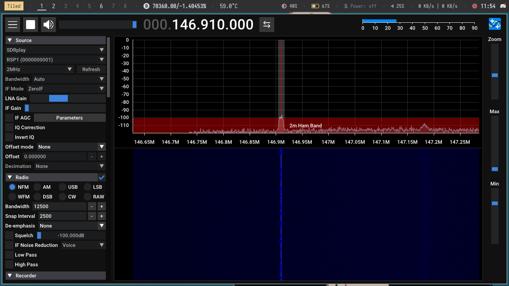

Saltar al contenido principal
Una flecha en la rodilla
Inicio
Entradas
Manifiesto del Selfhosting
RSS
Hoy es viernes y el SDR lo sabe
29-03-2024

#sdr
#ham
#radio aficionado
#vhf
Responder a esta entrada por email ↪